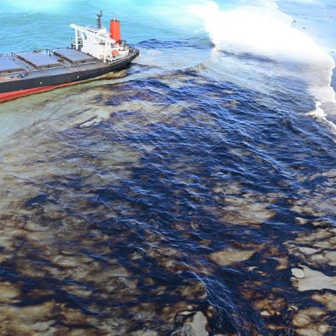
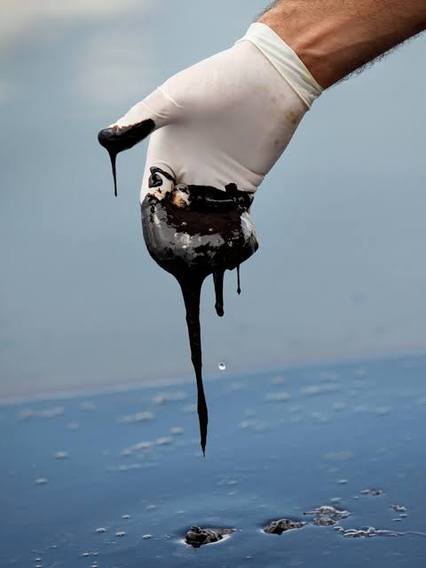

NAUTRACE reads Sentinel-1 radar the way a harbour pilot reads current — detecting a slick, running the tide backward to its likely origin, and weighing which vessel's track fits the evidence. When nothing fits, it says so.
Each stage carries its uncertainty into the next — nothing downstream pretends to be more certain than what came before it. Select a stage.
Sentinel-1 SAR is pulled for the incident window, despeckled, and passed through a segmentation model trained to separate oil slicks from look-alikes — wind shadows, algae, calm-water patches — before anything is called a spill.
Wind and surface-current data run the slick backward in time. The result isn't a single point — it's a probability field over where and when the discharge most likely began.
AIS tracks near the probable origin are scored on six factors — spatial proximity, timing, heading, origin overlap, behaviour, and AIS data quality — each shown separately, not folded into one opaque number.
A ranked list of vessels, or an honest Unknown Source finding when no track clears the evidence threshold — either way, with a forensic map and a provenance trail an investigator can stand behind.
Oil dampens capillary waves and flattens the sea surface, which SAR picks up as a dark signature — even at film thicknesses too faint to see from a passing vessel. NAUTRACE's segmentation model is trained specifically to hold that line between a real slick and a false one.
Confidence from the segmentation model, the drift model, and the scoring model compound into one figure attached to the final finding — so a ranking never reads more certain than its weakest link.
If no observed vessel meets the evidence bar, NAUTRACE reports that plainly rather than forcing a name onto a track that doesn't fit.
Spatial, temporal, heading, origin overlap, behaviour, AIS quality — an investigator can see exactly which factor moved the score.
The same drift model that reconstructs an origin also projects the slick's spread forward, feeding response planning.
Runs on freely available Sentinel-1 scenes and public met-ocean data, so deployment cost stays low for agencies with limited budgets.

Every reading — the slick's edge, the current's pull, a vessel's track — is logged with its own confidence, so the final report can be defended line by line.
Select a stakeholder to see what the same report gives them.
NAUTRACE is built for Coast Guard, port authorities, and environmental agencies evaluating a satellite-based spill investigation workflow.